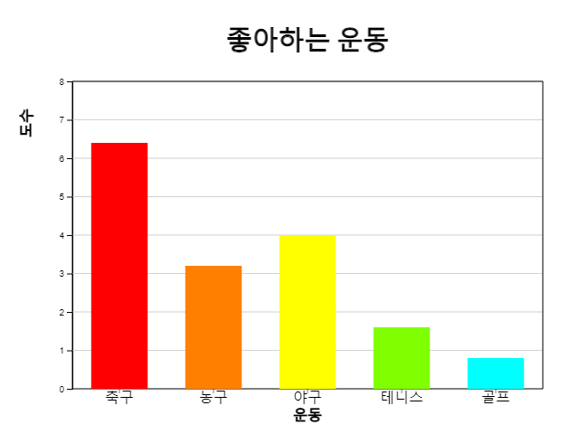
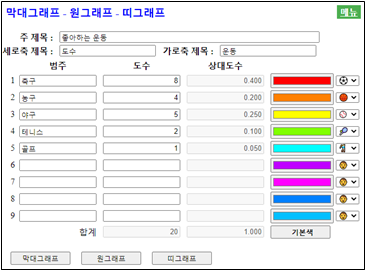
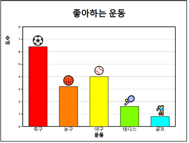
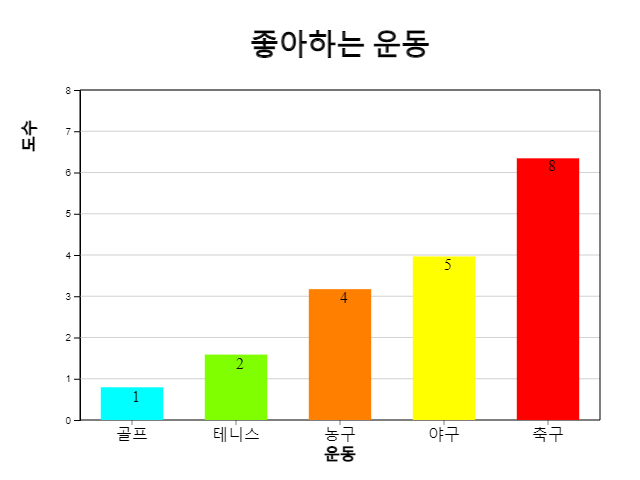
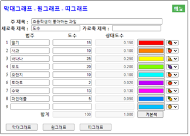
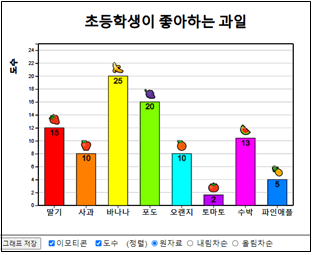
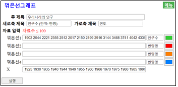

⭐ 생각열기 |
초등학교 한 학급 학생 20명을 대상으로 좋아하는 운동을 조사한 도수분포표가 다음과 같다.
[표 2.1] 한 학급의 성별 도수분포표
|
||||||
💎 탐구 |
좋아하는 운동이 어떠한 것인지 쉽게 관찰할 수 있는 그래프에는 어떠한 것이 있을까? |
2. 질적 자료의 그래프
📊 🍕 🌈 ⛅2.1 막대그래프 – 원그래프 – 띠그래프 |
- 범주형 자료인 경우에 막대그래프, 원그래프, 띠그래프를 그려 분석한다. - 단어로 이루어진 문자 형태의 자료는 단어구름을 그려 분석한다. |
2.1 막대그래프 – 원그래프 – 띠그래프
학생들에게 좋아하는 운동을 물으면 ‘축구’, ‘농구’, ‘야구’, ... 등의 대답을 얻을 수 있는데 이를 질적 자료라 한다. 대개의 질적 자료는 그 값이 범주를 의미하여 범주형 자료로 부르기도 한다. 질적 자료는 [표 2.1]과 같이 좋아하는 운동의 학생수를 세어 도수분포표로 만든 후 막대그래프, 원그래프, 띠그래프 등을 이용하여 그 특징을 살펴본다.
막대그래프는 각 범주별 자료의 도수를 직사각형 막대의 높이로 나타낸 것이다. 범주형 자료라는 것을 강조하기 위하여 막대사이의 간격을 띄어 놓는다.

<그림 2.1> 좋아하는 운동의 막대그래프
원그래프는 각 범주의 도수가 전체 자료에서 차지하는 비율을 원조각으로 나누어 표시한 그래프이다. 비율의 비교를 잘 할 수 있도록 시계 방향으로 가장 큰 범주의 원조각부터 순서대로 차례로 그린다.

<그림 2.2> 좋아하는 운동의 원그래프
띠그래프는 원그래프의 변형 형태로 각 범주의 도수가 전체 자료 중에서 차지하는 비율을 사각형 조각으로 나누어 표시한 그래프이다. 범주의 값이 가장 큰 순서부터 정렬할 수도 있으나 원그래프와 구별하기 위하여 자료의 범주 순서대로 사각형 조각을 그린다.

<그림 2.3> 좋아하는 운동의 띠그래프
『eStat』 소프트웨어를 이용하여 위의 그래프를 그려보자.
🎲 실습 2.1
『eStatH』을 이용하여 좋아하는 운동에 대해 막대그래프, 원그래프, 띠그래프를 그리고 어느 운동을 많이 좋아하는지 관찰하라풀이
|
왼쪽의 QR을 이용해 『eStatH』 메뉴에서 ‘막대그래프 – 원그래프 – 띠그래프’를 선택하면 <그림 2.4>와 같은 자료 입력창이 나타난다. ‘범주’와 ‘도수’를 입력하고 ‘주 제목’, ‘세로축 제목’, ‘가로축 제목’ 원하는 제목을 입력한다. [막대그래프] 버튼을 클릭하면 <그림 2.1>과 같은 막대그래프가 나타난다. 원하는 범주의 색을 선택하여 다시 [막대그래프를] 그릴 수도 있다. 제일 오른쪽에 각 범주별 아이콘을 선택하고 그래프 아래의 ‘이모티콘’을 체크하면 <그림 2.5>와 같은 그래프가 나타난다. |

<그림 2.4> 좋아하는 운동의 자료 입력

<그림 2.5> 각 범주의 이모티콘이 표시된 막대그래프
유사한 방법으로 막대 위에 <그림 2.6>과 같이 도수를 표시할 수도 있다.

<그림 2.6> 도수가 표시된 막대그래프
그래프 아래 (정렬) 선택사항을 이용하여 <그림 2.7> <그림 2.8>처럼 막대를 도수의 내림차순 또는 오름차순으로 정렬할 수 있다.

<그림 2.7> 도수의 내림차순 막대그래프

<그림 2.8> 도수의 오름차순 막대그래프
🎲 실습 2.2
초등학생이 좋아하는 과일을 조사하였더니 다음과 같다. 『eStatH』을 이용하여 막대그래프를 그려보자.[표 2.2] 초등학생들이 좋아하는 과일
| 과일 | 학생수 |
|---|---|
| 딸기 | 15 |
| 사과 | 10 |
| 바나나 | 25 |
| 포도 | 20 |
| 오랜지 | 10 |
| 토마토 | 2 |
| 수박 | 13 |
| 파인애플 | 5 |
풀이
|
왼쪽의 QR을 이용해 『eStatH』 메뉴에서 ‘막대그래프 – 원그래프 – 띠그래프’를 선택하면 <그림 2.9>와 같은 자료 입력창이 나타난다. ‘범주’와 ‘도수’를 입력하고 ‘주 제목’을 입력한 후 제일 오른쪽에 각 과일 아이콘을 선택한다. [막대그래프] 버튼을 클릭하고 그래프가 나타나면 그래프 아래의 ‘이모티콘’을 체크한다. 원하는 범주의 색을 선택하여 다시 [막대그래프를] 그릴 수도 있다 |

<그림 2.9> 좋아하는 과일의 자료 입력

<그림 2.10> 좋아하는 과일의 막대그래프
⏱ 과제 2.1
|
(우리나라 특별시/직할시 인구) 2015년 우리나라의 8개 특별시 및 직할시에 대한 인구가 [표 2.3]과 같다. 『eStatH』를 이용하여 막대그래프, 원그래프, 띠그래프를 그려 특징을 알아보라.
[표 2.3] 시도별 인구수 (출처: 통계청 단위: 만명)
|
⏱ 과제 2.2
|
(장래 희망직업) 어느 초등학교 학생들의 장래 희망직업을 조사한 요약 자료가 다음과 같다. 『eStatH』를 이용하여 막대그래프, 원그래프, 띠그래프를 그려 특징을 알아보라.
[표 2.4] 초등학생들의 장래 희망직업
|
2.2 단어구름
⭐ 생각열기 |
다음은 4차 산업혁명에 대한 위키백과의 설명이다.
[표 2.5] 4차 산업혁명에 대한 위키백과의 설명
|
|
💎 탐구 |
과연 4차 산업혁명 설명에는 어떠한 단어가 중요할까? |
단어구름은 문자 자료의 정보를 시각적으로 표현한 것이다. 단어구름은 주어진 문장에 나타나는 모든 단어들의 빈도수를 조사하여 많이 나타난 단어의 중요성을 글꼴 크기, 기울기 또는 색상으로 잘 보이도록 표시한다. <그림 2.11>은 위의 4차 산업혁명 섦여에 대한 단어 구름이다.

<그림 2.11> 4차 산업혁명 설명에 대한 단어 구름
단어구름은 가장 두드러진 단어를 빠르게 인식하여 상대적인 중요도를 결정하는 데 유용하다. 예를 들면 정치 연설의 중요한 주제를 시각화 하든지, 소셜 미디어 소프트웨어에서 한 단어와 관련된 항목의 하이퍼링크를 결정하는 도구로 사용할 수 있다. 단어 구름의 중요 단어는 특정 웹 사이트와 관련된 검색 엔진 마케팅 용어로 사용되기도 한다.
단어구름 생성에는 많은 알고리즘이 있는데 eStat는 d3 오픈 소프트웨어의 알고리즘을 채택했다. d3에는 아직 한글에 대한 알고리즘은 없어 현재 영어 문장에 대한 단어구름만 제공한다. 현재 단어구름은 단어 사이의 연관성을 표시할 수 있는 알고리즘 개발이 진행되고 있다.
🎲 실습 2.3
『eStatH』을 이용하여 [표 2.5]의 4차 산업혁명에 대한 단어구름을 그려 관찰하라풀이
|
왼쪽의 QR을 이용해 『eStatH』 메뉴에서 ‘단어구름’을 선택하면 <그림 2.12>와 같은 자료 입력창이 나타난다. 여기에 [표 2.5]의 문장을 복사한 후 [실행] 버튼을 클릭하면 <그림 2.11>과 같은 단어 구름이 나타난다. |

<그림 2.12> 단어구름을 위한 자료 입력
⏱ 과제 2.3
|
다음은 통계학에 대한 위키백과의 설명이다. 『eStatH』를 이용하여 단어구름을 그려 관찰하라
[표 2.6] 통계학에 대한 위키백과의 설명
|
⏱ 과제 2.4
|
다음은 다음은 존 에프 케네디 미국 대통령의 취임사 중 일부이다. 이 취임사에 대해 단어구름을 작성하여 주요 단어를 분석하라.
[표 2.7] 존 에프 케네디 미국 대통령의 취임사
|
연습문제
*** 답을 선택한 후 [제출] 버튼을 누르세요
2.1 다음과 같이 자료를 정리하여 만든 표를 무엇이라 부르는가?
| 성별 | 학생수 |
|---|---|
| 남 | 6 |
| 여 | 4 |
2.2 다음 중 질적 자료 분석에 사용되는 그래프는?
2.3 다음 중 질적 자료 분석에 사용되는 그래프가 아닌 것은?